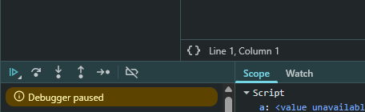

Anteriormente estivemos utilizando bastante o console.log() para imprimir valores em nosso console do navegador. Utilizamos muito no JS para verificar se nossa logica esta funcionando. Porem no JS temos outra instrucao que nos permite ter uma melhor visibilidade de nosso codigo, essa instrucao se chama debugger;.
debbuger;
Podemos utiliza-lo, colocando no topo de nosso arquivo JS com ele podemos observar que o navegador fica com um fundo mais cinza e temos tambem a opcao de source nele podemos basicamente ver o codigo fonte de nosso programa. Quando o debuger e chamado ele pausa na primeira linha e temos uns controle:

Com esse controle conseguimos controlar a execucao de nosso programa. E na opcao de Scope vai nos mostrando as informacoes de nossas variaveis ao receber o valor ao ir passando adiante com o controle.